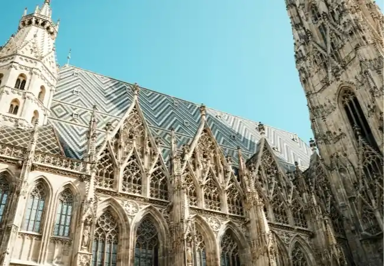
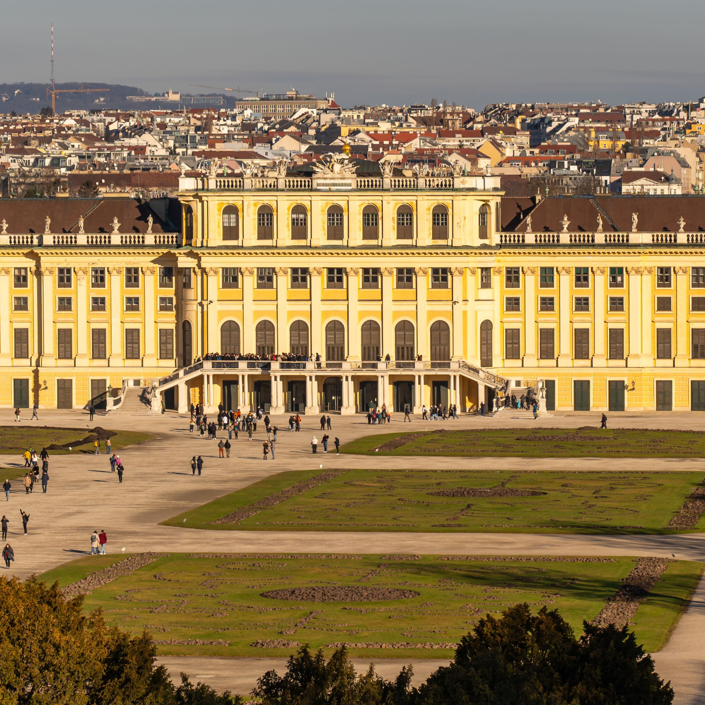
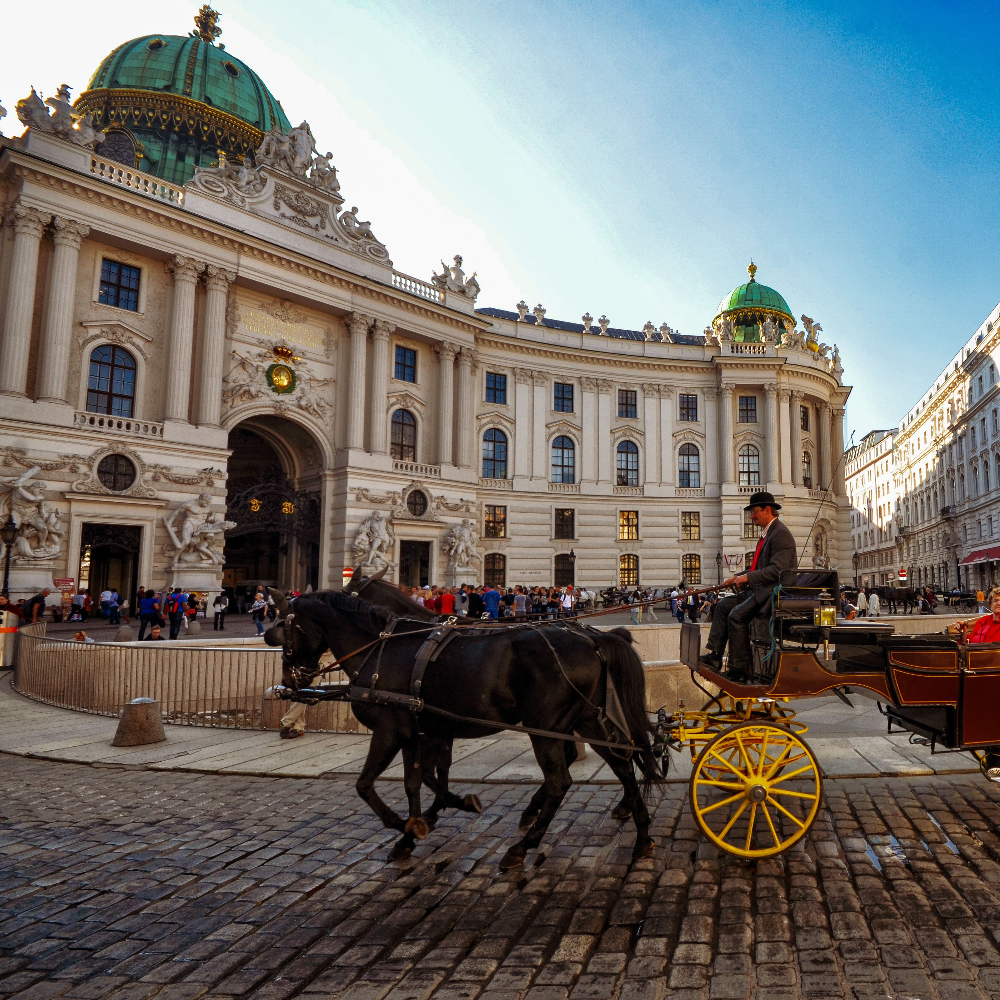
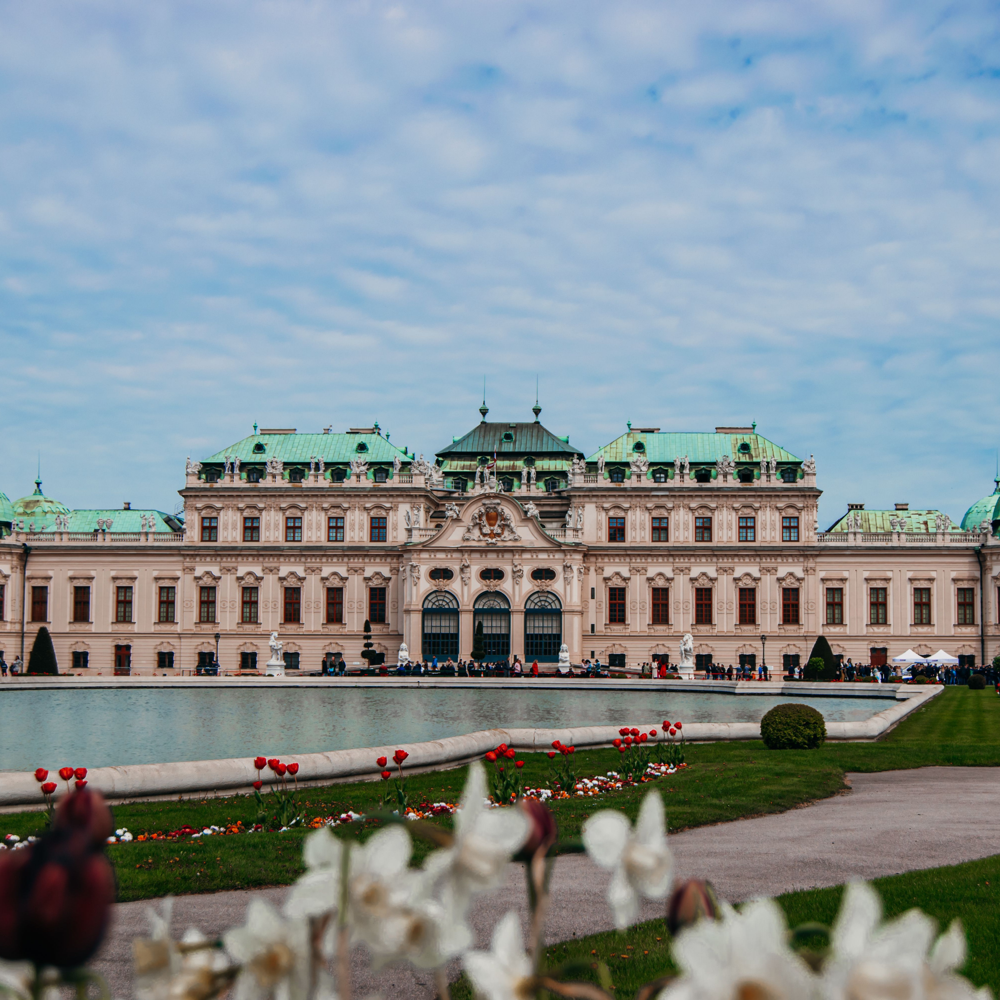
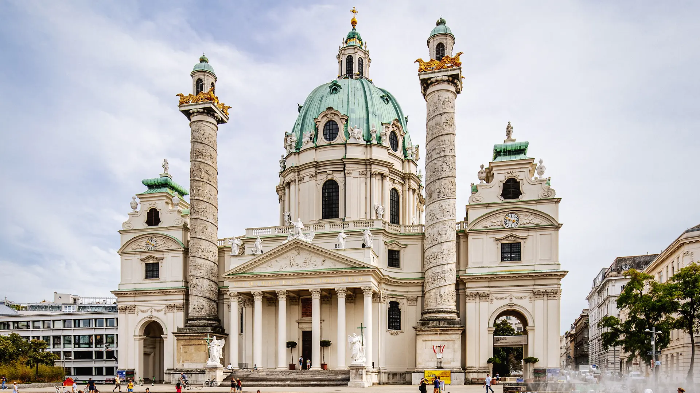
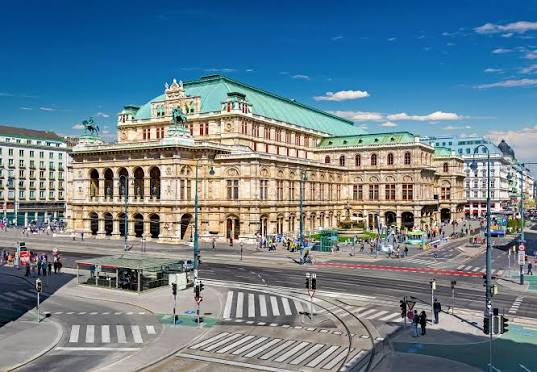
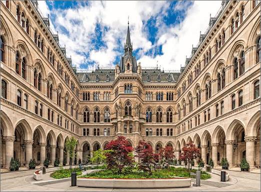
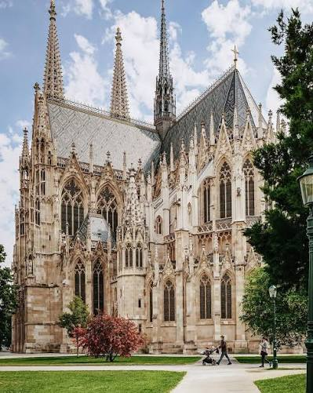
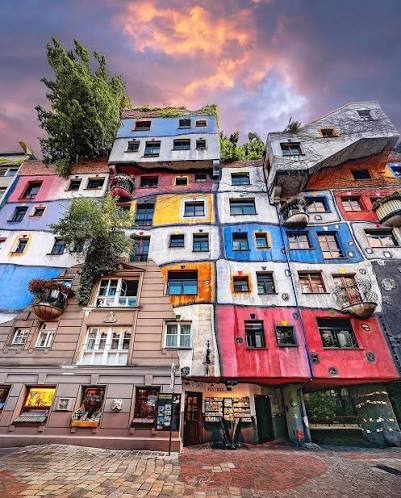
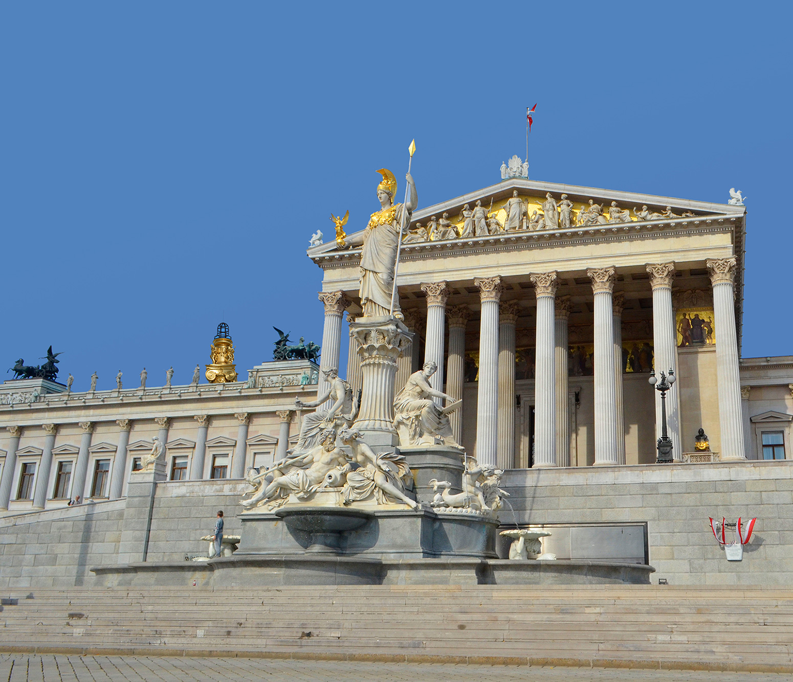

St. Stephen's Cathedral (Stephansdom) dominates the historic center with its striking, steeply pitched roof patterned with colorful glazed tiles.
Reviewers highlight its intricate Gothic stone carvings and towering southern spire, which offers panoramic views of the city.

Schönbrunn Palace served as the magnificent summer residence of the Habsburg monarchs.
Features classic Baroque and Rococo architecture across its sprawling imperial rooms and state apartments.

Hofburg is the expansive former winter palace complex of the Habsburg dynasty right in the heart of Vienna.
Combines various building phases spanning centuries, showcasing Gothic, Renaissance, and Baroque design elements.

Belvedere Palace is a stunning Baroque palace complex consisting of the Upper and Lower Belvedere.
Designed by Johann Lukas von Hildebrandt, it features elaborate tiered gardens, ornate ironwork, and striking marble halls.

St. Charles's Church (Karlskirche) is widely considered one of the finest Baroque ecclesiastical structures north of the Alps.
Features an impressive grand oval dome flanked by two monumental columns inspired by Trajan's Column in Rome.

Vienna State Opera is a monumental Neo-Renaissance structure built in the mid-19th century along the famous Ringstraße.
Celebrated for its grand staircases, elegant tea rooms, and rich musical heritage as a global center for opera.

Vienna City Hall (Rathaus) is a masterpiece of Neo-Gothic civic architecture designed by Friedrich von Schmidt.
Features soaring spires, intricate window tracery, and a prominent copper statue of the Rathausmann on its main tower.

Votive Church (Votivkirche) is a breathtaking 19th-century Neo-Gothic landmark constructed in gratitude for the survival of Emperor Franz Joseph.
Boasts twin open-work spires, flying buttresses, and deeply stained glass windows that flood the nave with colorful light.

Hundertwasser House (Hundertwasserhaus) provides a striking contrast to Vienna's imperial classical styles.
Designed by artist Friedensreich Hundertwasser, this expressionist apartment complex features bright colors, irregular organic lines, and rooftop trees.

Austrian Parliament building was designed by Theophil Hansen in a monumental Greek Revival style.
Modeled to resemble an ancient temple, symbolizing the democratic roots of its legislative chambers.